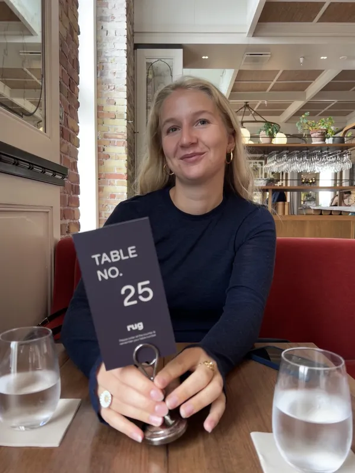
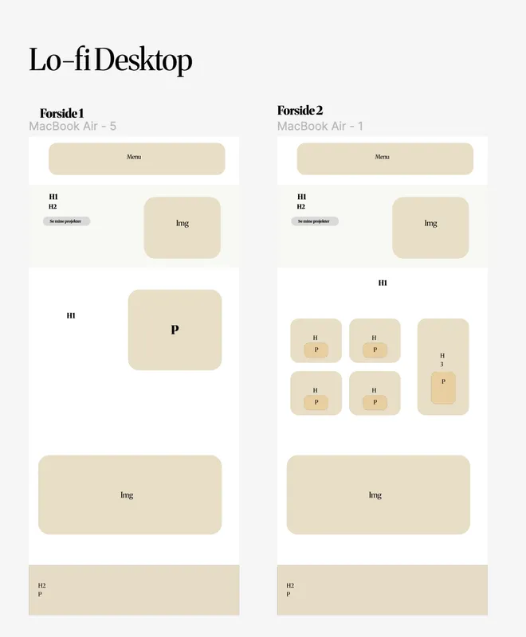
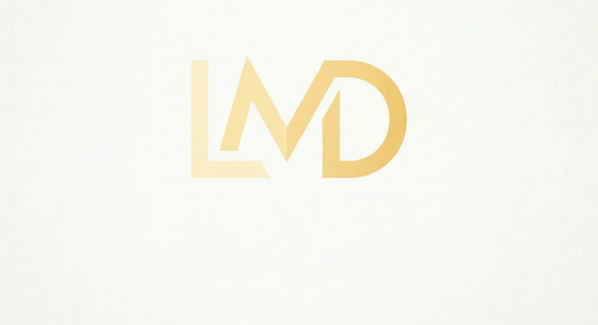

Om projektet
Denne hjemmeside indeholder alle de opgaver, redskaber og metoder vi har lært igennem 1 semester på multimediedesign uddannelsen. Portefolien har til opgave, at vise alle vores projekter og vores individuelle proces - her vil man kunne læse om hvert tema og se vores slutprodukter. Opgaven vil også indeholde mine egne refleksioner og viden jeg har opsamlet løbende på multimediedesign.
Se mine projekter
